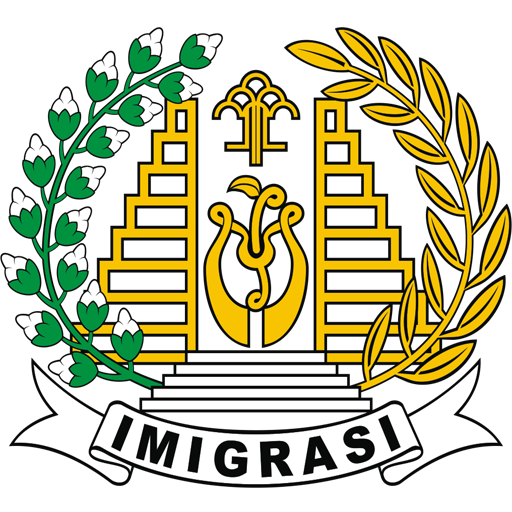

Imigrasi Malang
Hubungi Kami
Beranda
Pelayanan WNA
Persyaratan Ijin Tinggal Terbatas
ITAS TENAGA KERJA ASING (TKA)
Alih status ITK ke ITAS TKA (Permenkumham 43 tahun 2015)
Paspor kebangsaan yang sah dan masih berlaku
Surat Permohonan (Pakai Kop Perusahaan & TTD Orang Tinggi Perusahaan)
Surat jaminan (Pakai Kop Perusahaan & TTD Orang Tertinggi perusahaan)
Kuasa & Materai
RPTKA Asli & FC
IMTA Asli & FC
DPKK Asli & FC
FC Paspor
FC E-KTP Sponsor
FC Izin Usaha Tetap
Surat Izin Usaha Perdagangan (SIUP)
Surat Tanda Terdaftar Perusahaan
FC NPWP perusahaan
Akta Pendirian Perusahaan
Surat Keterangan Domisili Perusahaan
Surat Keterangan Domisili
Background Merah ukuran 3x4 2 lembar
Email yang bersangkutan
Persyaratan ITAS Online untuk Tenaga Kerja Asing/TKA (Permenkumham 27 tahun 2014)
Paspor Kebangsaan yang sah dan masih berlaku
Surat Permohonan (Pakai Kop Perusahaan & TTD Orang Tertinggi Perusahaan)
Surat jaminan (Pakai Kop Perusahaan & TTD Orang Tertinggi Perusahaan)
Surat Kuasa & Materai
RPTKA Asli & FC
IMTA Asli & FC
DPKK Asli & FC
FC Paspor, Visa dan Cap Pendaratan
FC E-KTP Sponsor
FC Izin Usaha Tetap
FC Surat Izin Usaha Perdagangan (SIUP)
Surat Tanda Terdaftar Perusahaan
FC NPWP perusahaan
FC Akta Pendirian Perusahaan
Surat Keterangan Domisili Perusahaan
Notifikasi Pendaftaran Itas Online
Telex Visa
Foto Background Merah ukuran 3x4 2 lembar
Mencamtumkan email yang bersangkutan
Persyaratan Perpanjangan ITAS Tenaga Kerja Asing (Permenkumham 27 tahun 2014
Paspor Kebangsaan yang sah dan masih berlaku
Surat Permohonan (Pakai Kop Perusahaan & TTD Orang Tertinggi Perusahaan)
Surat jaminan (Pakai Kop Perusahaan & TTD Orang Tertinggi Perusahaan)
Surat Kuasa & Materai
RPTKA Asli & FC
IMTA Asli & FC
DPKK Asli & FC
FC Paspor
FC E-KTP Sponsor
FC Izin Usaha Tetap
FC Surat Izin Usaha Perdagangan (SIUP)
Surat Tanda Terdaftar Perusahaan
FC NPWP perusahaan
FC Akta Pendirian Perusahaan
Surat Keterangan Domisili Perusahaan
Surat Keterangan Tempat Tinggal (SKTT)
Foto Background Merah ukuran 3x4 2 lembar
Mencamtumkan email yang bersangkutan
>
ITAS PENDIDIKAN/PELATIHAN
Alih status ITK ke ITAS untuk PENDIDIKAN/PELATIHAN(Permenkumham 43 tahun 2015)
Paspor kebangsaan yang sah dan masih berlaku
Surat Permohonan paspor (sponsor sesuai dengan Annotation pada visa)
Surat jaminan sponsor (sponsor sesuai dengan Annotation pada visa)
Fotokopi E-KTP sponsor
Rekomendasi dari kementerian yang menyelenggarakan urusan pemerintahan di bidang kesekretariatan negara, jika orang asing menerima beasiswa dari pemerintah Republik Indonesia
Rekomendasi dari kementerian atau lembaga pemerintah yang menyelenggarakan urusan di bidang pendidikan dan pelatihan
Surat keterangan domisili
Fotokopi halaman visa
Fotokopi cap pendaratan
Fotokopi halaman paspor
Foto background merah ukuran 3x4 2 lembar
Mencamtumkan email yang bersangkutan
Perpanjangan ITAS untuk PENDIDIKAN/PELATIHAN (Permenkumham 27 tahun 2014)
Paspor kebangsaan yang sah dan masih berlaku
Surat Permohonan paspor (sponsor sesuai dengan Annotation pada visa)
Surat jaminan sponsor (sponsor sesuai dengan Annotation pada visa)
Fotokopi E-KTP sponsor
Rekomendasi dari kementerian yang menyelenggarakan urusan pemerintahan di bidang kesekretariatan negara, jika orang asing menerima beasiswa dari pemerintah Republik Indonesia
Rekomendasi dari kementerian atau lembaga pemerintah yang menyelenggarakan urusan di bidang pendidikan dan pelatihan
Surat keterangan tempat tinggal(SKTT)
Fotokopi halaman paspor
Foto background merah ukuran 3x4 2 lembar
Mencamtumkan email yang bersangkutan
ITAS MENGIKUTI ISTRI
Alih status ITAS ke ITAP mengikuti SUAMI/ISTRI WNI(Permenkumham 27 tahun 2014)
Paspor kebangsaan yang sah dan masih berlaku
Surat Permohonan
Surat jaminan
Kutipan Akte Perkawinan atau Buku Nikah yang telah disahkan oleh Perwakilan Republik Indonesia atau Kementerian Luar Negeri RI bagi perkawinan yang dilangsungkan di Luar Negeri
Kutipan Akte Perkawinan Catatan Sipil atau Kutipan Akta Nikah
Bukti Laporan Perkawinan dari Kantor Catatan Sipil jika perkawinan dilangsungkan di luar negeri
FC paspr & VISA
FC KK (Kartu Keluarga)
FC E-KTP Sponsor
Surat Keterangan domisili
Foto background merah ukuran 3x4 2 lembar
Mencamtumkan email yang bersangkutan
Pendaftaran ITAS ONLINE mengikuti SUAMI/ISTRI WNI (Permenkumham 27 tahun 2014)
Paspor kebangsaan yang sah dan masih berlaku
Surat Permohonan
Surat jaminan
Kutipan Akte Perkawinan Catatan Sipil atau Kutipan Akta Nikah
Bukti Laporan Perkawinan dari Kantor Catatan Sipil jika Perkawinan dilangsungkan di luar negeri
FC Paspor,VISA dan Cap Pendaratan
FC KK (Kartu Keluarga)
Fotokopi E-KTP sponsor
Notifikasi Pendaftaran Online
Visa Telex
Foto background merah ukuran 3x4 2 lembar
Mencamtumkan email yang bersangkutan
Perpanjangan ITAS ONLINE mengikuti SUAMI/ISTRI WNI (Permenkumham 27 tahun 2014)
Paspor asli
Surat Permohonan oleh sponsor
Surat jaminan oleh sponsor
Bukti Perkawinan yang telah diterjemahkan dalam Bahasa Indonesia kecuali Bahasa Inggris
Surat keterangan tempat tinggal
Bukti lapor perkawinan dari kantor catatan sipil apabila perkawinan dilangsungkan diluar negeri
Fotokopi KK (Kartu Keluarga)
Fotokopi E-KTP sponsor
Fotokopi halaman paspor
Foto background merah ukuran 3x4 2 lembar
>
ITAS WNA LANSIA
ITAS ONLINE untuk WNA Lanjut Usia(Permenkumham 27 tahun 2014)
Paspor asli
Surat Permohonan oleh sponsor
Surat jaminan oleh sponsor
Fotokopi E-KTP sponsor
Surat izin usaha perdagangan biro perjalanan wisata yang ditunjuk oleh kementerian yang bertuga dibidang kepariwisataan
Bukti tersedia dana untuk hidup di Indonesia dari Lembaga dana pensiun atau Bank
Bukti polis asurans kesehatan asuransi kematian
Bukti mempekerjakan tenaga informal WNI sebagai pramuwisma,supir,keamanan atau tukang kebun
Fotokopi halaman visa
Fotokopi halaman paspor
Telex visa
Notifikasi pendaftaran ITAS Online
Fotokopi cap pendaratan
Foto background merah ukuran 3x4 2 lembar
Perpanjangan ITAS ONLINE untuk WNA Lanjut Usia (Permenkumham 27 tahun 2014)
Paspor Asli
Surat Permohonan paspor oleh sponsor
Surat jaminan oleh sponsor
Fotokopi E-KTP sponsor
Surat izin usaha perdagangan biro perjalanan wisata yang ditunjuk oleh kementrian yang bertugas dibidang kepariwisataan
Bukti tersedia dana untuk hidup di Indonesia dari lembaga dana pensiun atau bank
Bukti polis asuransi kesehatan dan asuransi kematian
Fotokopi halaman paspor
Surat Keterangan Tempat Tinggal
Foto background merah ukuran 3x4 2 lembar